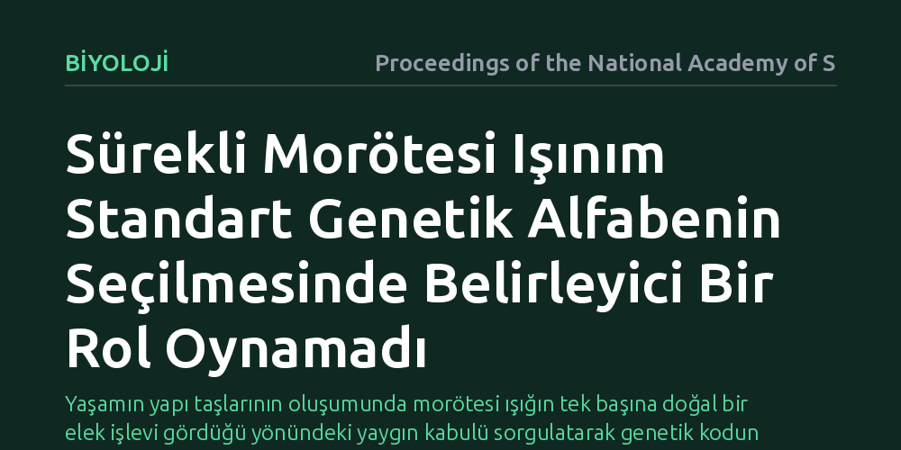

BIYOLOJI · Proceedings of the National Academy of Sciences · 2026-10-18
Erken Dünya'daki sürekli morötesi ışınımın, standart genetik harflerin alternatif moleküller arasından seçilmesini sağlayıp sağlamadığı araştırıldı. Sonuçlar, kesintisiz morötesi ışığın standart genetik alfabenin tercih edilmesinde belirleyici ve kesin bir rol oynamadığını gösterdi.
Yaşamın yapı taşlarının oluşumunda morötesi ışığın tek başına doğal bir elek işlevi gördüğü yönündeki yaygın kabulü sorgulatarak genetik kodun kökenine dair yeni açıklamalar aranması gerektiğini gösteriyor.

Yeryüzündeki tüm canlılar genetik bilgilerini adenin, guanin, sitozin, timin ve urasil olmak üzere temelde aynı harflerle kodlar. Ancak kimyasal açıdan bakıldığında doğada bu moleküllerin yerini alabilecek yüzlerce farklı baz yapısı mevcuttur. Bilim insanları uzun süredir yaşamın neden diğer olası kimyasal yapıları değil de tam olarak bu standart alfabeyi seçtiği sorusuna yanıt aramaktadır.
En popüler kuramlardan biri, erken Dünya'da ozon tabakası henüz oluşmadığı için yeryüzüne ulaşan yoğun morötesi (UV) ışınımın doğal bir süzgeç görevi gördüğünü öne sürüyordu. Bu görüşe göre günümüz genetik harfleri morötesi ışığı soğurup hızla zararsız ısıya dönüştürebilen olağanüstü bir fotokimyasal kararlılığa sahipti; alternatif moleküller ise ışık altında parçalanıp elenmişti.
Araştırmacılar bu klasik hipotezi test etmek amacıyla erken Dünya'nın morötesi ışık ortamını kontrollü laboratuvar koşullarında yeniden üretti. Deneylerde hem standart genetik bazlar hem de prebiyotik çorba içinde oluşması muhtemel alternatif nükleozit ve pirimidin türevleri sürekli morötesi ışınıma maruz bırakıldı.
Işınlama süresince moleküllerin parçalanma hızları, yeni bileşiklerin sentezlenme verimleri ve fotokimyasal dayanıklılıkları hassas analitik yöntemlerle takip edildi. Böylece morötesi ışığın gerçekten standart harfleri koruyup diğerlerini sistematik olarak ayıklayan bir baskı unsuru olup olmadığı doğrudan gözlemlendi.
Elde edilen bulgular, sürekli morötesi ışınımın standart genetik alfabeyi tek başına seçtiği varsayımını doğrulamadı. Kesintisiz ışınlama altında standart bazlar her zaman rakiplerine kıyasla mutlak bir dayanıklılık üstünlüğü sergilemedi; bazı alternatif moleküllerin de benzer veya yakın kararlılık gösterdiği, hatta bazen beklenmedik fotokimyasal ürünlerin ortaya çıktığı görüldü.
Deneyler sonucunda morötesi ışığın varlığının, standart harflerin evrimsel zaferini açıklamakta belirleyici ve kesin bir kanıt sunmadığı anlaşıldı. Sürekli UV ışığı ne alternatifleri tamamen yok eden kusursuz bir katil ne de sadece standart bazları üreten mucizevi bir seçici olarak çalışmıştı.
Bu sonuç, prebiyotik kimya araştırmalarında tek bir çevresel faktöre aşırı anlam yüklemenin yanıltıcı olabileceğini gösteriyor. Genetik alfabenin şekillenmesinde yalnızca morötesi ışık değil; ıslanma-kuruma döngüleri, mineral yüzeylerle etkileşimler ve moleküllerin kendi kendine kopyalanma verimliliği gibi çoklu etkenlerin birlikte rol oynadığı daha karmaşık senaryolar öne çıkıyor.
Yaşamın yapı taşlarının seçilimi tek bir fotokimyasal filtreye indirgenemeyecek kadar katmanlı bir süreçtir. Araştırma, biyolojinin evrensel kodunun nasıl ortaya çıktığını anlamak için erken Dünya'nın dinamik kimyasal ekosistemine daha bütüncül bir gözle bakmamız gerektiğini hatırlatıyor.